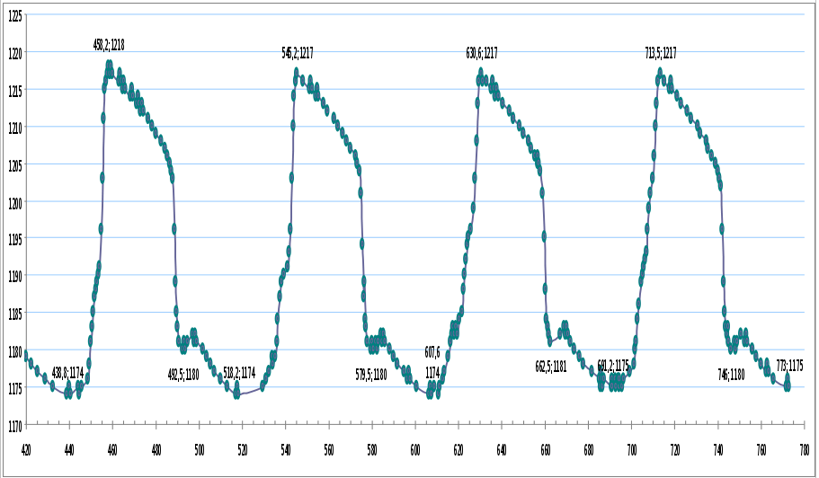
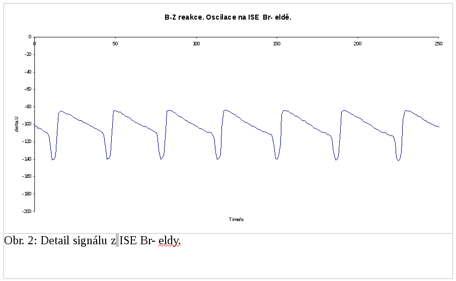

Výsledky
Nejlepší dva klasifikační algoritmy dosáhly celkové správnosti 99.5 % na testovacích datech.
Vyhodnocení dat
Ke zpracování jsme se rozhodli použít algoritmus Naive Bayes, neboť ten je schopen kromě třídy navíc poskytnou i pravděpodobnost, s jakou instance do určené třídy náleží. Analýzou histogramu pravděpodobností jsme manualně určili práh 95 %. Instance klasifikované pod tímto prahem jsme prohlásili za nespohlehlivé a snímky, ve kterých se vyskytla jedna nebo více nespolehlivých instancí nezahrnuli do výsledné datové řady. V případě, že dva nebo více po sobě jdoucích snímků obsahovaly to stejné číslo, do datové řady jsme zahrnuli pouze první z nich. Datovou řadu jsme exportovali do formátu CSV a vytvořili graf v programu Microsoft Excel 2007.
Závěr
Vytvořili jsme sadu skriptů v programovacím jazyce Python s použitím knihovny PIL [3], které je možné použít k analýze videosekvencí podobného charakteru, jako jsou klipy displeje měřícího přístroje, které jsme používali pro testování my.
Při použití na jiných datech bude pravděpodobně nutné provést úpravy v procesu předzpracování obrazu, zejména znovu nalézt vhodný práh. Všechny další kroky mohou zůstat nezměněny.
Pokud vyneseme hodnoty získané analýzou našeho videa do grafu, dostaneme názorný obrázek, který dobře odpovídá v literatuře popsanému měření [1].
Výřez z námi vytvořeného grafu

Graf z literatury

Poděkování
Chtěli bychom poděkovat doktorskému studentu FI Pavlu Karasovi za radu ohledně metod zpracovnání obrazu, které nám poskytl na začátku řešení projektu.
Použitá literatura
[1] BROŽ, Pavel, Miroslav HOLÍK, Pavel JANDERKA, Jiří SOPOUŠEK, Jaromír TOUŠEK a Libuše TRNKOVÁ. Laboratorní cvičení z fyzikální chemie. Brno: Masarykova univerzita, 2003. 80 s. Fyzikální chemie 1. ISBN 80-210-3203-0.
[2] SOILLE, Pierre. Morphological image analysis: principles and applications. 2nd ed., corr. 2nd print. Berlin: Springer, c2004, xvi, 391 s. ISBN 3540429883.
[3] Python Imaging Library Handbook. Dostupné online: http://effbot.org/imagingbook/pil-index.htm
Novinky:
[20/05/2013]
Spuštìny webové stránky
[26/05/2013]
Interim report
Související odkazy:
WekaStránky předmětu